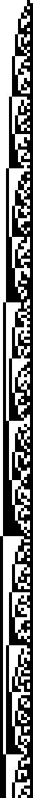
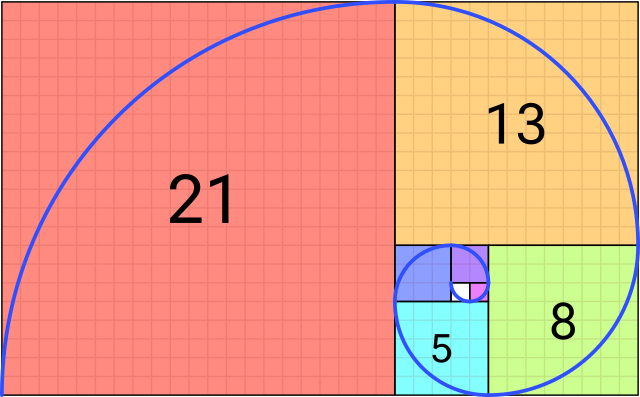
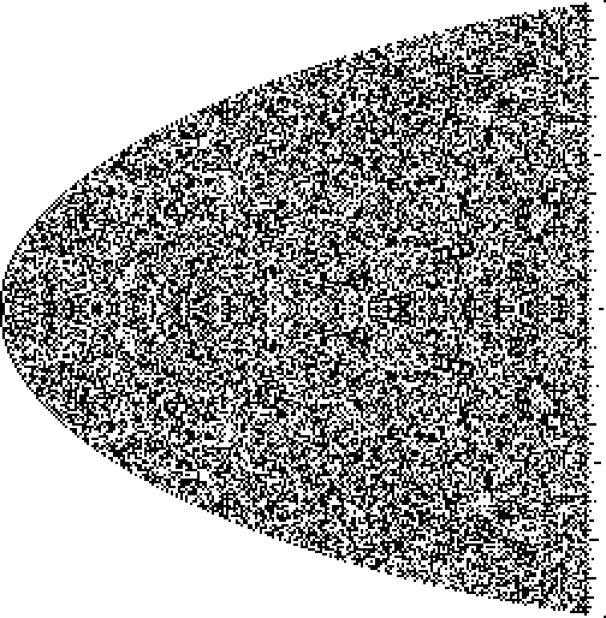

Systems based on numbers
The main concept discussed in A New Kind of Science by Stephen Wolfram is the complexity that results from very simple Cellular Automata. I looked at that in an earlier post Cellular Automata with F#. Chapter four of A New Kind of Science looks at systems based on numbers:
The underlying rules for systems like cellular automata are however usually different from those for systems based on numbers. The main point is that the rules for cellular automata are always local: the new color of any particular cell depends only on the previous color of that cell and its immediate neighbors. But in systems based on numbers there is usually no such locality.
Here we explore systems based on numbers and visualise them on a black and white grid.
Representing Numbers
If numbers are Platonic Forms then that in which we model them are numeral systems. Everyone reading this will be familiar with the base 10 decimal system of numbers, that's what we use in today's culture. But over the centuries humans have developed different numeral systems. A number is a number, but it can be represented in many different ways.
In this exercise we want to visualise sequences of numbers. We'll restrain ourselves to a very simple visualisation, that of just black and white cells - the same as we did with Cellular Automata.
If our goal is black and white cells then we need to represent numbers using the base 2 (binary) numeral system.
let convertToBinary (n: int) =
Convert.ToString(n, 2).PadLeft(8, '0')
[4; 17; 255] |> List.map convertToBinary
|
A quick recap of the binary number system: the digit on the far right hand side is the value 1, and then each column left is double the previous column.
128 |
64 |
32 |
16 |
8 |
4 |
2 |
1 |
Written Out |
Value |
|---|---|---|---|---|---|---|---|---|---|
0 |
0 |
0 |
0 |
0 |
1 |
0 |
0 |
0 + 0 + 0 + 0 + 0 + 4 + 0 + 0 |
4 |
0 |
0 |
0 |
1 |
0 |
0 |
0 |
1 |
0 + 0 + 0 + 16 + 0 + 0 + 0 + 1 |
17 |
1 |
1 |
1 |
1 |
1 |
1 |
1 |
1 |
128 + 64 + 32 + 16 + 8 + 4 + 2 + 1 |
255 |
To visualise a binary number we'll have a row of square cells. Each cell will correspond to a column. Columns with the value 1 will be coloured black, and those with 0 white.
For example 17 is represented as 00010001 in binary and would be visualised as □□□■□□□■.
Big Numbers
The type int can store values up to 2,147,483,647. The numbers we're dealing with will get much larger than that so we'll use the type bigint. .NET has no built in way to show the binary representation of a bigint. Lucky for us Stuart Lang blogged on the topic so we'll use the snippet he provides. Implementation hidden for brevity.
// convertToBinary 99999999999999999
// F# compiler error: This number is outside the allowable range for 32-bit signed integers F# Compiler 1147
bigintAsBinary (bigint 99999999999999999UL)
|
Simple Sequences
We'll start with very simple sequences:
let increment = Seq.initInfinite (fun i -> bigint (i + 1))
increment |> Seq.take 25 |> Seq.toList
|
let squares = Seq.initInfinite (fun i -> bigint (i + 1) ** 2)
squares |> Seq.take 25 |> Seq.toList
|
// source http://www.fssnip.net/3X
let isPrime n =
let sqrt' = (float >> sqrt >> int) n // square root of integer
[ 2 .. sqrt' ] // all numbers from 2 to sqrt'
|> List.forall (fun x -> n % x <> 0) // no divisors
let primes =
let rec primes' n =
seq { // sequences are lazy, so we can make them infinite
if isPrime n then
yield bigint (n)
yield! primes' (n+1) // recursing
}
primes' 2 // starting from 2
primes |> Seq.take 25 |> Seq.toList
|
generatePng 256 increment 4 "addition256"
generatePng 256 squares 4 "squares256"
generatePng 256 primes 4 "primes256"
Addition |
Squares |
Primes |
|---|---|---|
|
|
 |


Fibonacci
The Fibonacci sequence is documented as early as 200 BCE and is known for emerging in nature. It's simple to generate; the next number in the sequence is the sum of the two preceding numbers.
To balance brevity and performance the number generator below is from Rosetta Code.
let fibonacci = Seq.unfold (fun (x, y) -> Some(x, (y, x + y))) (0I,1I)
fibonacci |> Seq.take 16 |> Seq.toList
|
Plotting squares with side width equal to numbers in the fibonacci sequence, and then drawing an arc across them gives us the fibonacci spiral.
Fibonacci Squares |
Fibonacci Spiral |
|---|---|
|
 |

{kind=link}
{kind=link}
Visualising the first 512 fibonacci numbers as binary also gives us an interesting result. In the largely scattered mess there are repeated patterns of upside down right-angled triangles.
generatePng 512 fibonacci 3 "fib512"

Pascal's Triangle
Related to the Fibonacci Sequence is Pascal's Triangle. This is a sequence where numbers in rows are the sum of two parent numbers in the row above them. In some ways this is similar to how we generate Cellular Automata. The image below shows that summing shallow diagonals of Pascal's Triangle generates the Fibonacci Sequence.

{kind=link}
// source: https://rosettacode.org/wiki/Pascal%27s_triangle#F.23
let rec nextPascalrow l =
match l with
| [] -> []
| h :: [] -> [bigint 1]
| h :: t -> h + t.Head :: nextPascalrow t
let pascalsTriangle n = List.scan(fun l i -> bigint 1 :: nextPascalrow l) [bigint 1] [1 .. n]
pascalsTriangle 10
|
Here we visualise the 256th row of Pascal's Triangle.
let pascalsTriangleRow = pascalsTriangle 256 |> List.last |> List.toSeq
generatePng 257 pascalsTriangleRow 3 "pascalsRow256"

Conclusion
This has been a short exploration of systems based on numbers. Below is a function for generating the visualisations. This entire blog post is a Literate F# script. You can execute it locally to generate the images. View the source here.
Generate Image Source Code
At a high level this function takes a sequences of bigints, converts them to binary, and draws them on an image.
A couple of considerations go into this function:
- The width of the generated image dynamically adjusts to the longest of the
bigints passed in. - Each cell can be drawn over multiple pixels. Initially I had written this so that one cell is one pixel, however it scaled poorly across screens and the patterns weren't clear.
let generatePng rows (numbers: BigInteger seq) (cellDiameterInPixels: int) filename =
let numbersAsBinary =
numbers
|> Seq.take rows
|> Seq.toList
|> List.map bigintAsBinary
let longestBinaryString =
numbersAsBinary
|> List.sortByDescending (fun s -> s.Length)
|> List.head
|> String.length
let paddedNumbersAsBinary =
numbersAsBinary
|> List.map (fun s -> s.PadLeft(longestBinaryString, '0'))
let image = new Image<Rgba32>(longestBinaryString * cellDiameterInPixels, rows * cellDiameterInPixels);
let white = new Rgba32(255F, 255F, 100F, 1F);
let black = new Rgba32(0f, 0f, 0f, 1F);
let withIndexes x = x |> Seq.mapi (fun index item -> (index, item))
for (rowIndex, row) in withIndexes paddedNumbersAsBinary do
for (cellIndex, cell) in withIndexes row do
let colour =
match cell with
| '1' -> black
| '0' -> white
| _ -> failwith $"Unexpected {cell}"
let startingCellIndex = if cellIndex = 0 then 0 else cellIndex * cellDiameterInPixels
let startingRowIndex = if rowIndex = 0 then 0 else rowIndex * cellDiameterInPixels
let drawingLocations =
List.allPairs
[startingCellIndex .. (startingCellIndex + cellDiameterInPixels - 1)]
[startingRowIndex .. (startingRowIndex + cellDiameterInPixels - 1)]
drawingLocations
|> List.iter (fun v -> image.[fst v, snd v] <- colour)
image.Save(sprintf "static/gen/%s.png" filename)
Further Reading
val int : value:'T -> int (requires member op_Explicit)
--------------------
[<Struct>] type int = int32
--------------------
type int<'Measure> = int
<summary>Converts a base data type to another base data type.</summary>
(+0 other overloads)
Convert.ToString(value: uint32) : string
(+0 other overloads)
Convert.ToString(value: uint16) : string
(+0 other overloads)
Convert.ToString(value: string) : string
(+0 other overloads)
Convert.ToString(value: float32) : string
(+0 other overloads)
Convert.ToString(value: sbyte) : string
(+0 other overloads)
Convert.ToString(value: obj) : string
(+0 other overloads)
Convert.ToString(value: int64) : string
(+0 other overloads)
Convert.ToString(value: int) : string
(+0 other overloads)
Convert.ToString(value: int16) : string
(+0 other overloads)
module List from Microsoft.FSharp.Collections
--------------------
type List<'T> = | ( [] ) | ( :: ) of Head: 'T * Tail: 'T list interface IReadOnlyList<'T> interface IReadOnlyCollection<'T> interface IEnumerable interface IEnumerable<'T> member GetReverseIndex : rank:int * offset:int -> int member GetSlice : startIndex:int option * endIndex:int option -> 'T list static member Cons : head:'T * tail:'T list -> 'T list member Head : 'T member IsEmpty : bool member Item : index:int -> 'T with get ...
Int32.ToString(format: string) : string
Int32.ToString(provider: IFormatProvider) : string
Int32.ToString(format: string, provider: IFormatProvider) : string
type String = interface IEnumerable<char> interface IEnumerable interface ICloneable interface IComparable interface IComparable<string> interface IConvertible interface IEquatable<string> new : value: nativeptr<char> -> unit + 8 overloads member Clone : unit -> obj member CompareTo : value: obj -> int + 1 overload ...
<summary>Represents text as a sequence of UTF-16 code units.</summary>
--------------------
String(value: nativeptr<char>) : String
String(value: char []) : String
String(value: ReadOnlySpan<char>) : String
String(value: nativeptr<sbyte>) : String
String(c: char, count: int) : String
String(value: nativeptr<char>, startIndex: int, length: int) : String
String(value: char [], startIndex: int, length: int) : String
String(value: nativeptr<sbyte>, startIndex: int, length: int) : String
String(value: nativeptr<sbyte>, startIndex: int, length: int, enc: Text.Encoding) : String
[<Struct>] type BigInteger = new : value: byte [] -> unit + 8 overloads member CompareTo : other: int64 -> int + 3 overloads member Equals : other: int64 -> bool + 3 overloads member GetBitLength : unit -> int64 member GetByteCount :?isUnsigned: bool -> int member GetHashCode : unit -> int member ToByteArray : unit -> byte [] + 1 overload member ToString : unit -> string + 3 overloads member TryFormat : destination: Span<char> * charsWritten: byref<int> *?format: ReadOnlySpan<char> *?provider: IFormatProvider -> bool member TryWriteBytes : destination: Span<byte> * bytesWritten: byref<int> *?isUnsigned: bool *?isBigEndian: bool -> bool ...
<summary>Represents an arbitrarily large signed integer.</summary>
--------------------
BigInteger ()
BigInteger(value: byte []) : BigInteger
BigInteger(value: decimal) : BigInteger
BigInteger(value: float) : BigInteger
BigInteger(value: int) : BigInteger
BigInteger(value: int64) : BigInteger
BigInteger(value: float32) : BigInteger
BigInteger(value: uint32) : BigInteger
BigInteger(value: uint64) : BigInteger
BigInteger(value: ReadOnlySpan<byte>,?isUnsigned: bool,?isBigEndian: bool) : BigInteger
val seq : sequence:seq<'T> -> seq<'T>
--------------------
type seq<'T> = Collections.Generic.IEnumerable<'T>
<summary>Gets the number of characters in the current <see cref="T:System.String" /> object.</summary>
<returns>The number of characters in the current string.</returns>
String.PadLeft(totalWidth: int, paddingChar: char) : string
type Image = interface IImage interface IImageInfo interface IDisposable interface IConfigurationProvider new : configuration: Configuration * pixelType: PixelTypeInfo * metadata: ImageMetadata * size: Size -> unit + 1 overload member Accept : visitor: IImageVisitor -> unit member AcceptAsync : visitor: IImageVisitorAsync * cancellationToken: CancellationToken -> Task member CloneAs<'TPixel2 (requires default constructor and value type and 'TPixel2 :> ValueType and 'TPixel2 :> IPixel<'TPixel2>)> : unit -> Image<'TPixel2> + 1 overload member Dispose : unit -> unit + 1 overload member EnsureNotDisposed : unit -> unit ...
<summary> Encapsulates an image, which consists of the pixel data for a graphics image and its attributes. For the non-generic <see cref="T:SixLabors.ImageSharp.Image" /> type, the pixel type is only known at runtime. <see cref="T:SixLabors.ImageSharp.Image" /> is always implemented by a pixel-specific <see cref="T:SixLabors.ImageSharp.Image`1" /> instance. </summary>
<content> Adds static methods allowing the decoding of new images. </content>
<content> Adds static methods allowing the creation of new image from a byte array. </content>
<content> Adds static methods allowing the creation of new image from a given file. </content>
<content> Adds static methods allowing the creation of new image from a given stream. </content>
<content> Adds static methods allowing the creation of new image from raw pixel data. </content>
<content> Adds static methods allowing wrapping an existing memory area as an image. </content>
--------------------
type Image<'TPixel (requires default constructor and value type and 'TPixel :> ValueType and 'TPixel :> IPixel<'TPixel>)> = inherit Image new : configuration: Configuration * width: int * height: int -> unit + 7 overloads member Accept : visitor: IImageVisitor -> unit member AcceptAsync : visitor: IImageVisitorAsync * cancellationToken: CancellationToken -> Task member Clone : unit -> Image<'TPixel> + 1 overload member CloneAs<'TPixel2 (requires default constructor and value type and 'TPixel2 :> ValueType and 'TPixel2 :> IPixel<'TPixel2>)> : configuration: Configuration -> Image<'TPixel2> member Dispose : disposing: bool -> unit member EnsureNotDisposed : unit -> unit member GetPixelRowSpan : rowIndex: int -> Span<'TPixel> member SwapOrCopyPixelsBuffersFrom : pixelSource: Image<'TPixel> -> unit ...
<summary> Encapsulates an image, which consists of the pixel data for a graphics image and its attributes. For generic <see cref="T:SixLabors.ImageSharp.Image`1" />-s the pixel type is known at compile time. </summary>
<typeparam name="TPixel">The pixel format.</typeparam>
--------------------
Image(width: int, height: int) : Image<'TPixel>
Image(configuration: Configuration, width: int, height: int) : Image<'TPixel>
Image(width: int, height: int, backgroundColor: 'TPixel) : Image<'TPixel>
Image(configuration: Configuration, width: int, height: int, backgroundColor: 'TPixel) : Image<'TPixel>
[<Struct>] type Rgba32 = new : r: byte * g: byte * b: byte -> unit + 5 overloads member CreatePixelOperations : unit -> PixelOperations<Rgba32> member Equals : obj: obj -> bool + 1 overload member FromArgb32 : source: Argb32 -> unit member FromBgr24 : source: Bgr24 -> unit member FromBgra32 : source: Bgra32 -> unit member FromBgra5551 : source: Bgra5551 -> unit member FromL16 : source: L16 -> unit member FromL8 : source: L8 -> unit member FromLa16 : source: La16 -> unit ...
<content> Provides optimized overrides for bulk operations. </content>
<content> Provides optimized overrides for bulk operations. </content>
<summary> Packed pixel type containing four 8-bit unsigned normalized values ranging from 0 to 255. The color components are stored in red, green, blue, and alpha order (least significant to most significant byte). <para> Ranges from [0, 0, 0, 0] to [1, 1, 1, 1] in vector form. </para></summary>
<remarks> This struct is fully mutable. This is done (against the guidelines) for the sake of performance, as it avoids the need to create new values for modification operations. </remarks>
--------------------
Rgba32 ()
Rgba32(vector: Vector3) : Rgba32
Rgba32(vector: Vector4) : Rgba32
Rgba32(packed: uint32) : Rgba32
Rgba32(r: byte, g: byte, b: byte) : Rgba32
Rgba32(r: byte, g: byte, b: byte, a: byte) : Rgba32
Rgba32(r: float32, g: float32, b: float32,?a: float32) : Rgba32
(extension) Image.Save(path: string, encoder: Formats.IImageEncoder) : unit
(extension) Image.Save(stream: IO.Stream, format: Formats.IImageFormat) : unit
Image.Save(stream: IO.Stream, encoder: Formats.IImageEncoder) : unit
val float : value:'T -> float (requires member op_Explicit)
--------------------
[<Struct>] type float = Double
--------------------
type float<'Measure> = float